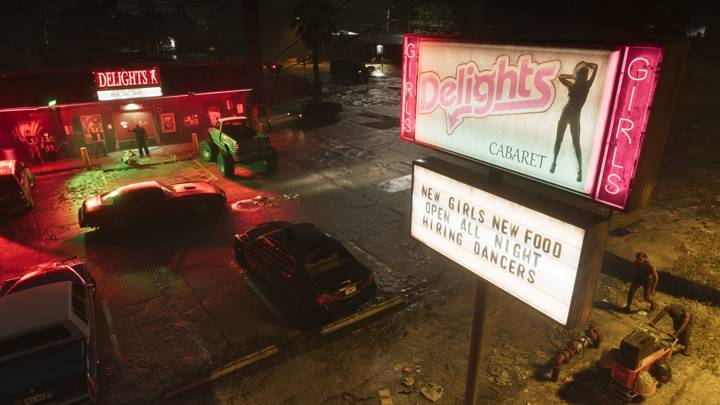
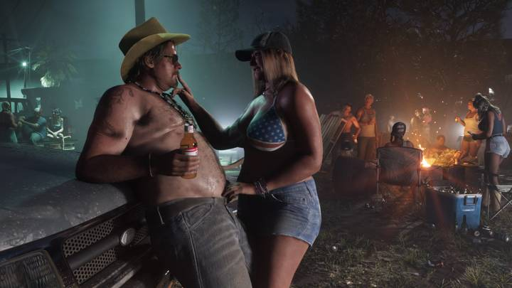
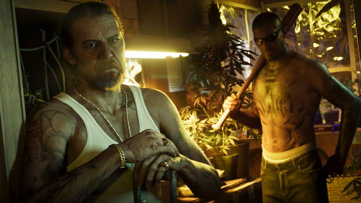
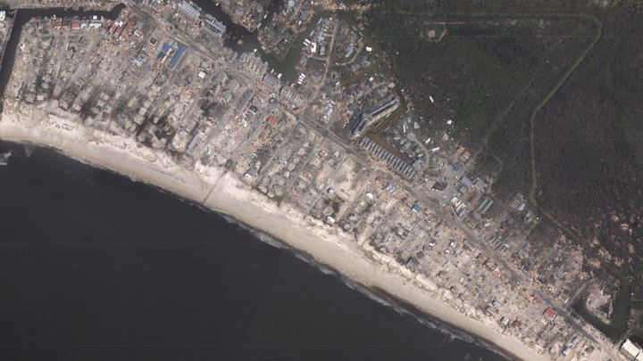

Rockstar называет Port Gellhorn «забытым побережьем Леониды». Forgotten Coast — реальное прозвище побережья Флориды от Мексико-Бич до Сент-Маркса, тихого и небогатого края на севере Мексиканского залива.
В октябре 2018 года это побережье разрушил ураган «Майкл» — он вышел на сушу у Мексико-Бич с силой 5-й категории. Обшарпанные мотели и пустые улицы Port Gellhorn — узнаваемый портрет таких городков.
Коротко
- Прототип — Забытое побережье (Forgotten Coast), северо-запад Флориды.
- Прозвище реальное: от Мексико-Бич до Сент-Маркса.
- В 2018 году побережье разрушил ураган «Майкл».



Сравнения в регионе (2)
Места 1


vsПо мотивамPort Gellhorn и «Забытое побережье» ФлоридыМеста · Port Gellhorn

 vs
vs